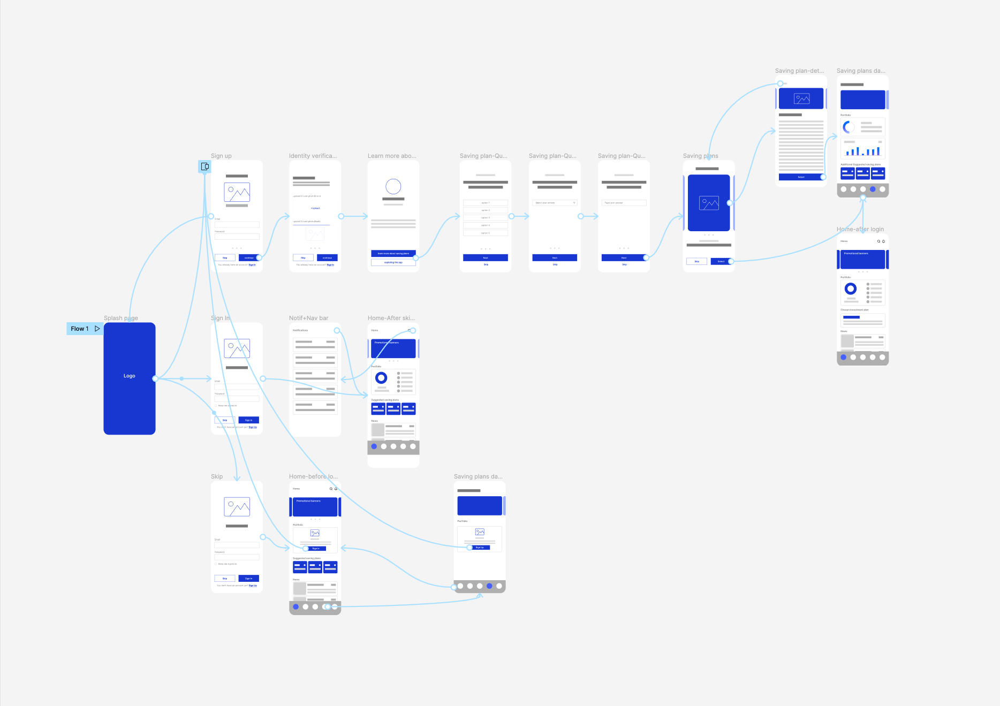

Overview
Based on user interviews, the absence of a phone application caused Vaultoro to miss out on numerous conversions and user retention. In addition, having a presence on smartphones can create more engagement and lead to user satisfaction.Problem
Although there are several similar applications, such as Binance, Coinbase, or Coingecko in the market. They lack the simplicity which lets users follow the trading process.
Solution
Our solution was to design a simple, easy-to-follow and user-friendly app without complexities which at the same time deliveres sufficient functionalities.
Users
This application is for users who want to trade, manage their assets, stay informed about the prices and the crypto news
Key Features
The application contains a portfolio where users can view their assets, prices and fluctuations. In addition, there is a crypto news section where the users can keep themselves updated with the ever-changing crypto space. Moreover, in the market overview section users can view the market cap, coin prices and gain insights as well as detailed statistics and charts.
Process
- User Flow Diagrams
- Wireframes
- Prototyping
- Round of Feedback
- User Interface Design
- Review and Bug Fixing
Mapping the experience
I mapped out potential user flows and collaborated with my team to get the experience right. The image below shows the flow of Sign Up/Sign In as an example.

Wireframing
Next, I turned initial flows into low fidelity wireframes to continue working out the user experience and information architecture of the application.
{kind=link}
Final User Interface Design